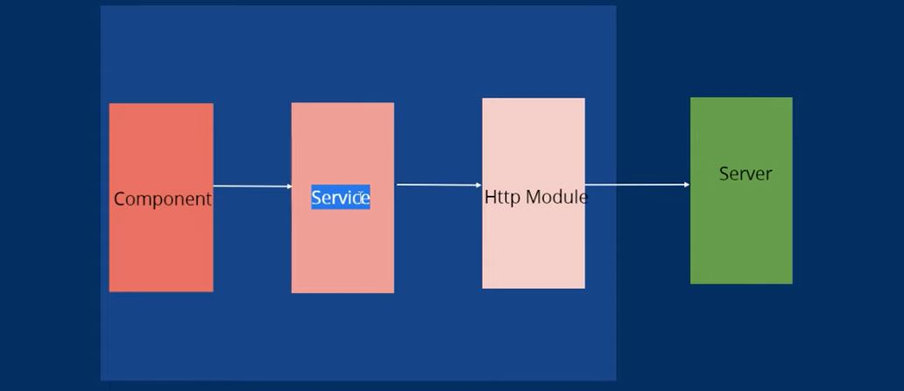

{{'Call API in Angular' | titlecase}}
{{'What is API ' | titlecase}} :
--> As We know that angular does not directly connected to database. so we need interfaces between them .
--> So API's are the interfaces between frontend(client) and backend(Server).
--> Full Form of API is Application Programming Interface.
{{'Understand how API works' | titlecase}} :

--> In service we can see the HttpClient Module .This module is responsible for
feteching the data from Server .
--> This is already made by the angular.We just need some method from this module like get,post,put,delete...etc
{{'Make Service and Call get API' | titlecase}} :
--> First we have to import HttpClientModule in module.ts file in imports section .
--> For to create Service we run this command ng g s serviceName
--> Next import the HttpClient in that service. inside the constructor we write like this Syntax :
constructor(private http:HttpClient)
--> Next you can create a function and return the value from server .
Note: Here i use dummy API.
{{'Display data using API' | titlecase}} :
Example :
Today Doller to Rupee Value :{{dataa.results.INR}}
{{'Interview Questations' | titlecase}} :
1) can we have functions in service ?
A) Yes,
2) can we use service in multiple modules ?
A) yes
3) is services are component dependent or model dependent ?
A) Services are not component dependent or model dependent. they are totally independent .
4) Can we call API's in services ?
A) Yes , We can call API's.